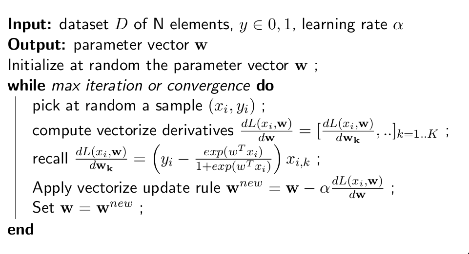

Logistic Regression
1 Intro
Sometimes it is not necessary to calculate the likelyhood and then get the posterior via Bayes Rule. Eventually you can directly model the posterior with some specific methods. One of theese is the logistic regression. Basically you model your prior as function based on some paramteres \(\theta\), then you try to minimize the error made by this function comparing the predictions on the labels with the training data. By modelling the prior directly, you only have \(P(Y=c|X=x)\), so you cannot sample from this distribution. It means that if the model cannot output a element \(x\) given a class \(c\), because we would need the likelyhood for that. Logistic regression is a Probabilistic discriminative classifier.
2 Binary case
We can compute the decision boundary, which is linear in x.
\begin{align} P(Y=0|x) &= P(Y=1|x) \\ P(Y=0|x) &- P(Y=1|x) = 0 \\ \log{P(Y=0|x)} &- \log{P(Y=1|x)} = 0\\ \vdots \\ w^{T}x+b &= 0 \end{align}3 Multiclass case
We need a set of weights \(w\) for each class. Actually, we can save 1 set of weights that we don't need for the last class, that is the complementar of the rest. For each class we also need the bias. In the equations, \(P(Y=K|x)\) is the probability of the sample of not being assigned to class \(c\).
\begin{align} P(Y=c|x) &= \frac{e^{w_{c}^{T}x + b_{c}}}{1+\sum_{l=1}^{K-1}e^{w_{l}^{T}x + b_{l}}} \\ P(Y=K|x) &= \frac{1}{1+\sum_{l=1}^{K-1}e^{w_{l}^{T}x + b_{l}}} \end{align}The classification function is
\begin{equation} f_{LR}(x) = argmax_{c}P(Y=c|x) \end{equation}Considering a practical example, with 5 classes and 3 features the logistic regression needs 5*(3-2)+2 = 12 paramters (2 vector of size 5 of weights plus 2 biases).
3.1 Learning
The learning part in the logistic regression consists in maximizing the so called log likelihood. So the idea is to find the best set of parameters \(\theta\) that fit well the training dataset:
\begin{equation} argmax_{\theta}L(\theta|D) = argmax_{\theta}\sum_{i=1}^{n}\log{P(Y = y_{i}|X=x_{i})} \end{equation}In the binary case maximizing that function is the same as minimizing the negative binary cross entropy:
\begin{align} &L(\theta|D) = \sum_{i=1}^{N}y_{i}\log{P(y=1|x)} + (1-y_{i})\log{(P(y=0|x))}\\ &L(\theta|D) = \sum_{i=1}^{N}y_{i}w^{T}x_{i} - \log{(1+e^{w^{T}x_{i}})} \end{align}Minimizing the function means computing the derivative of a summation, which is not ideal. What we are doing with linear regression is trying to minimize the log likelihood for each one of the samples (this way we remove the summation). So we evaluate the log likelihood in a point, we compute the gradient in that point and tweak the parameters a little bit to go in the opposite direction of the gradient. We go in the opposite direction of the gradient because if the gradient is positive it means that the function is increasing, so we want to go in the opposite direction and vice-versa.
So let's compute the derivative of \(L(x_{i},\theta|D)\) with respect to a generic \(w_{k}\), which is the weight of a feature. Remember that we are doing this fixing a single sample \(x_{i}\) to make the formula easier.
\begin{align} L(x_{i},\theta|D) &= y_{i}w^{T}x_{i} - \log{(1+e^{w^{T}x_{i}})} \\ \frac{d}{d_{w_{k}}}L(x_{i},\theta|D) &= \frac{d}{d_{w_{k}}}y_{i}w^{t}x_{i} - \frac{d}{d_{w_{k}}}\log{(1+e^{w^{T}x_{i}})} \\ &= \frac{d}{d_{w_{k}}}y_{i}(w_{1}x_{i,1} + w_{2}x_{i,2} + \cdots + w_{k}x_{i,k} + \cdots + w_{n}x_{i,n}) - \frac{d}{d_{w_{k}}}\log{(1+e^{w^{T}x_{i}})} \\ &= x_{i,k}y_{i} - \frac{d}{d_{w_{k}}}\log{(1+e^{w^{T}x_{i}})} \\ &= x_{i,k}y_{i} - \frac{1}{1+e^{w^{T}x_{i}}}\cdot e^{w^{T}x_{i}}\cdot x_{i,k}\\ &= x_{i,k}y_{i} - \frac{1}{1+e^{w^{T}x_{i}}}\cdot e^{w^{T}x_{i}}\cdot x_{i,k}\\ &= \bigl(y_{i} - \frac{e^{w^{T}x_{i}}}{1+e^{w^{T}x_{i}}} \bigr)x_{i,k} \end{align}Gradient descent update rule:
\begin{equation} \theta_{j} = \theta_{j} - \alpha\frac{d}{\theta_{j}}f(\theta,x) \end{equation}where \(\alpha\) is the learning rate, and controls the size of the step. For convex functions, the gradient descent will converge for sure to the global minimum.
- batch gradient descent: all of the training examples are used at each iteration;
- minibatch gradient descent: only a small subset of the training set is used;
- stochastic gradient descent: just a random sample is used;
The learning algorithm is the following: 
3.2 Geometry
- linear decision boundary in the binary case. In the multiclass case it is piecewise linear;
- Logistic regression has the same representation capacity of the LDA.
3.3 Performance
- Logistic regression always has less \((O(DC))\) parameters then LDA(\(O(DC+D^{2})\));
- LR is faster then NB and LDA in classification but slower in training, because numerical optimization is needed;
- a